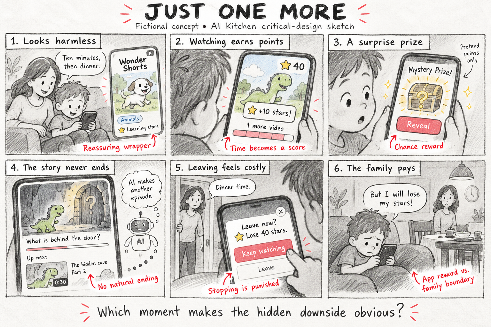
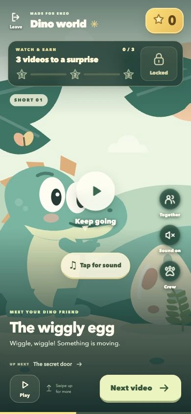
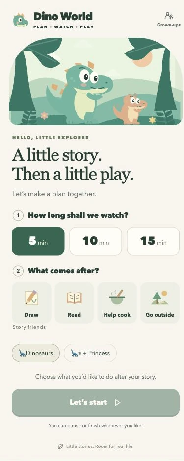

Dino World
One dinosaur story app, two approaches to keeping children watching and helping them stop.

Original storyboard · Just One More
The starting concept for Dino World’s deliberately bad version: points, surprise prizes, and cliffhangers make it hard to stop watching.
View the full-size storyboard
Deliberately bad version
Watch & Earn
Watching earns prizes. Leaving costs stars.
Try the bad version
Good version
Plan & Play
Choose a time, finish the story, then move to an offline activity.
Try the good version